SGI 
Menu dedicado as aplicação do departamento de SGI (Sistema de Gestão Integrada)
-
Homologação de Produtos

- Descrição: Aplicação que retorna lista dos EPI's homologados para uso para as equipes operacionais.

-
Passo a passo:
-
Aplicação abre em formato de filtro onde pode-se passar os parametros para a busca e abertura do relatório. Sendo eles :
- Id de Homologação interna (DOLP).
- Codigo do produto (Sankhya).
- Fornecedor.
- Nome do Produto.
- Fabricante do produto.
- Descrição do Produto.
- Ao selecionar os parametros para abertura do relatorio se abrirá abaixo a lista de produtos :

- Ao clicar no botão "NOVO" se abrirá uma nova para que possa ser feito o cadastro da homologação de um novo produto.

- Ao abrir icone de "Edição se abrirá uma nova tela para que que se possa editar as informações do produto cadastrado.

- Ao clicar no icone "PDF" se abrirá um documento em pdf do atestado de homologação do produto selecionado.

-
Lista mestra
Esta sessão esta destinada para o gerenciamento centralizadado de documentos, procedimentos, áreas e informações relacionadas ao niveis de acesso e armazenamento da informação.
-
Cadastro

-
Descrição: Aplicação que permite o cadastro de documentos, procedimentos, aréas e niveis de acesso.
-
Passo a passo:
-
Aplicação abre em forma de filtro para que possa ser passado os parametros para a busca e abertura da lista de documentos, neste filtro nenhum dos parametros são obrigatórios.
-
Ao clicar no botão "NOVO" se abrirá uma nova tela para que se possa realizar o cadastro de um novo documento.

-
Prencha os campos solicitados e clique no botão "INCLUIR" para realizar o cadastro do documento.
-
No relatorio aberto e possivel cliclar no Ãcone de "EDITAR" para realizar a edição do documento.
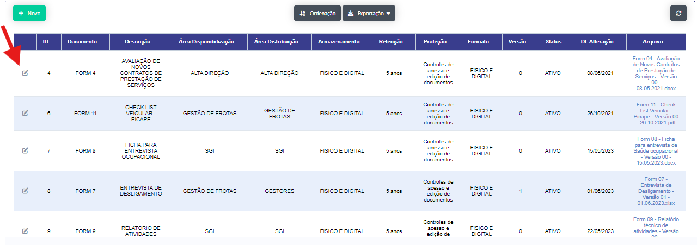
-
Ao clicar no link na coluna arquivo, realizará o download do arquivo solicitado.
-
Relatório
-
Descrição: Aplicação que permite a visualização dos documentos, procedimentos, áreas e niveis de acesso.
-
Passo a passo: Aplicação abre em forma de filtro para que possa ser passado os parametros para a busca e abertura da lista de documentos, neste filtro nenhum dos parametros são obrigatórios.
- Abre o Relatorio dos documentos da lista mestra

-
Ao clicar no link na coluna arquivo, realizará o download do arquivo solicitado.
-
Cadastros auxiliares
Sub - menu para cadastro de documentos, áreas, indentificação e cadastro de proteção (nivéis de acesso)
-
Cadastro de documentos

-
Descrição Aplicação para cadastro e edição dos nomes do documentos/procedimentos

- Ao clicar no botão "NOVO" se abrirá uma nova tela para que se possa se realizado o novo registro.

-
Prencha os campos solicitados e clique no botão "INCLUIR" para realizar
-
Ao clicar no icone de edição se abrirá uma nova tela para que se possa realizar a edição do documento.

-
Cadastro de Ãrea 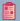
-
Descrição : Aplicação para cadastro e edição das áreas de atuação e disponilibilidade da informação.(Departamento)

-
Passo a passo :
-
Ao clicar no botão "NOVO" se abrirá uma nova tela para que se possa se realizado o novo registro.

-
Prencha os campos solicitados e clique no botão "INCLUIR"
-
Ao clicar no icone de edição se abrirá uma nova tela para que se modificar um um registro já realizado.

-
Cadastro de Identificação

-
Descrição : Aplicação para cadastro e edição das identificações dos documento (Descrição).

-
Passo a passo :
-
Ao clicar no botão "NOVO" se abrirá uma nova tela para que se possa se realizado o novo registro
- Ao clicar no icone de edição se abrirá uma nova tela para que se possa realizar a edição do registro.

-
Cadastro de Proteção

-
Descrição : Aplicação para cadastro e edição das proteções dos documentos (Descrição), Departamento ou setor responsavel e seu respectivo nivel de acesso.
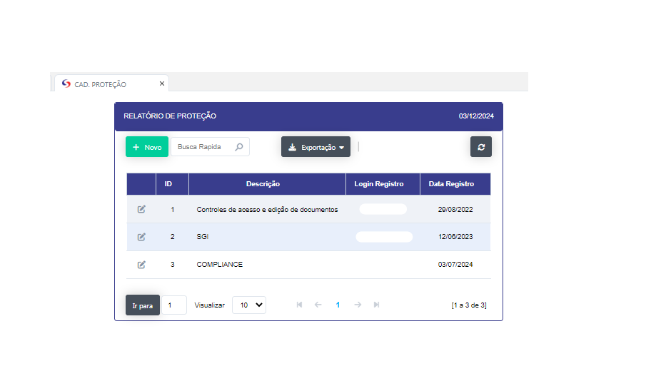
-
Passo a passo :
-
Ao clicar no botão "NOVO" se abrirá uma nova tela para que se possa se realizado o novo registro

- Ao clicar no icone de edição se abrirá uma nova tela para que se possa realizar a edição do registro.

- Aqui se pode excluir ou editar ou registros.
-
-
Meio Ambiente 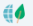
Sub-menu de aplicação para gerenciamento de questões ambientais como : Conservação e manutenção dos equipamentos, controle de consumo de recursos naturais, gestão de resÃduos, indicadores de meio ambiente, validação de documento e laudos.
-
Conservação das Instalações

-
Descrição : Aplicação para cadastro e edição das instalações de equipamentos e manutenção predial
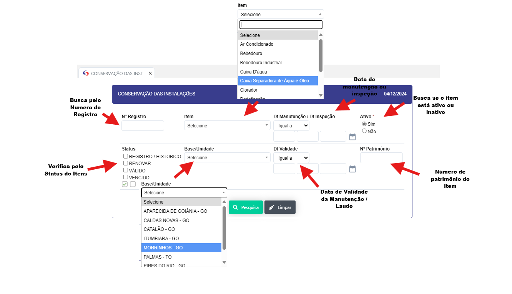
- Passo a passo : Aplicação abre o filtro onde são passados os parametros para abertura de registros sendo eles.
- Nº de Registro
- Item
- Data de Manutenção / Data de Inspeção
- Ativo
- Status
- Base/Unidade
- Data de Validade
- Nº Patrimonio Após a passagens dos parametros se abrirá o relatorio com os dados solicitados.

- Ao clicar no botão "NOVO" se abre um novo registro

- Cadastro de Novos itens

-
Ao clicar no botão novo se abre um novo registro na ultima linha para inserção do registro.
-
Cadastro de localidades

-
Ao clicar no botão novo se abre um novo registro na ultima linha para inserção do registro.
-
Apos finalizar a inserção das informações deverá presionar o botão "INCLUIR" para salvar o registro.
-
Ao clicar no icone de edição se abrirá uma nova tela para que se possa realizar a edição do registro e inclusão de anexos

-
Controle de Consumo

-
Descrição : Aplicação para cadastro e edição do consumo de recursos naturais , como agua , energia, gás, combustivéis , etc.

Aplicação abre o filtro onde são passados os parametros para abertura de registros sendo eles.
- localidade
- Data Inclusão
- Data Referente
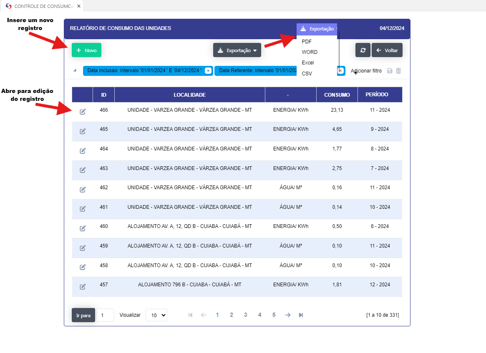
-
Passo a passo :
-
Ao clicar no botão "NOVO" se abre um novo registro

- Preencha os campos solicitados e clique no botão "INCLUIR" para salvar o registro.
- Tipo
- Periodo
- Unidade(Lotação)
- Consumo

- Ao clicar no botão "NOVO " se abre um novo registro
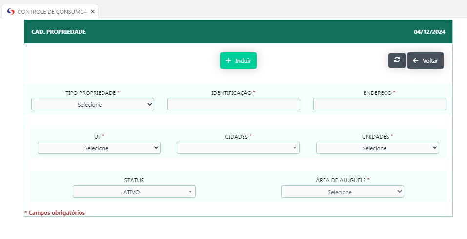
-
Preencha os campos solicitados e clique no botão "INCLUIR" para salvar o registro.
-
Ao clicar no icone de edição se o item para edição

-
Se insira os anexos clicando o botão Adicionar arquivos, Após a inserção clique no botão Iniciar upload
-
Após a edição clique no botão "SALVAR" para salvar as alterações.
-
Residuos

-
Descrição : Aplicação para cadastro e edição dos resÃduos gerados pela empresa, como lixo, efluentes, etc.
-
Aplicação Abre em formato de relatorio com os dados do resÃduos gerados pela empresa.

-
Passo a passo :
-
Ao clicar no botão "NOVO" se abre um novo registro

- Ao clicar no botão "PESQUISA" se abrirá o filtro para que possa ser passados os parametros para uma busca personalizada.

- Ao clicar no icone de "EDIÇÃO" se abrirá o modal para edição do registro.

-
Após a edicão clique no botão "SALVAR" para salvar as alterações.
-
Na parte da tela inicial temos acesso os cadastros Auxiliares , que são:
-
Cadastros de Residuos 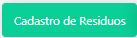
-
Descrição : Aplicação para cadastro do tipo de registro de residuo.

-
Passo a passo :
-
Ao clicar no botão novo se abre um novo registro na ultima linha da tabela.
-
Cadastros de Local Destino

-
Descrição : Aplicação para cadastro do local de destino(Parceiro) dos resÃduos
-
Passo a passo :
-
Ao clicar no botão novo se abre um novo registro na ultima linha da tabela.
-
Cadastro de SaÃda Tipo

-
Descrição : Aplicação para cadastro do tipo de saÃda dos residuos
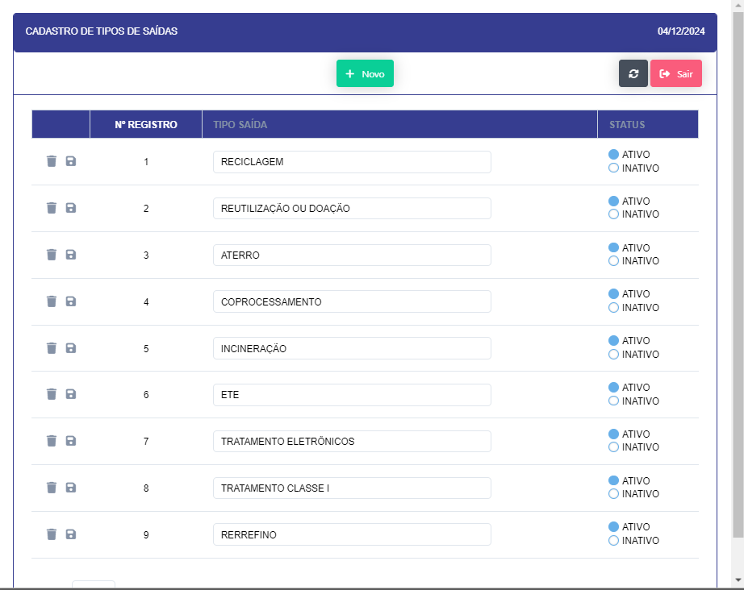
-
Passo a passo :
-
Ao clicar no botão novo se abre um novo registro na ultima linha da tabela.
-
Indicadores de Meio Ambiente
-
Descrição : Dashboard para visualização dos indicadores de meio ambiente da empresa.
Sendo quatro dashboard , cada um com indicadores especÃficos para cada área de meio ambiente:

-
Passo a passo :
-
Click em cada menu para visualizar os indicadores de meio ambiente da empresa.
-
Controle de ResÃduos
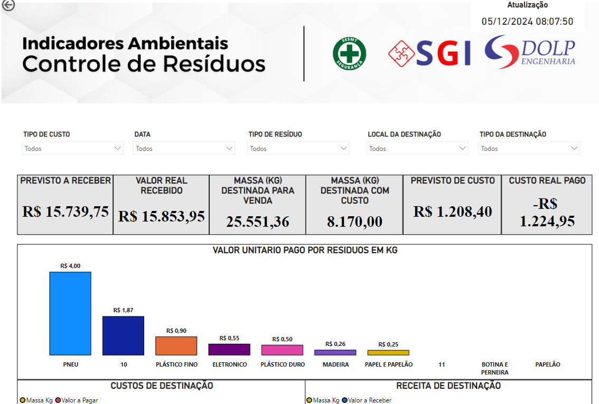
- Conservação das Instalações

- Controle de Consumo
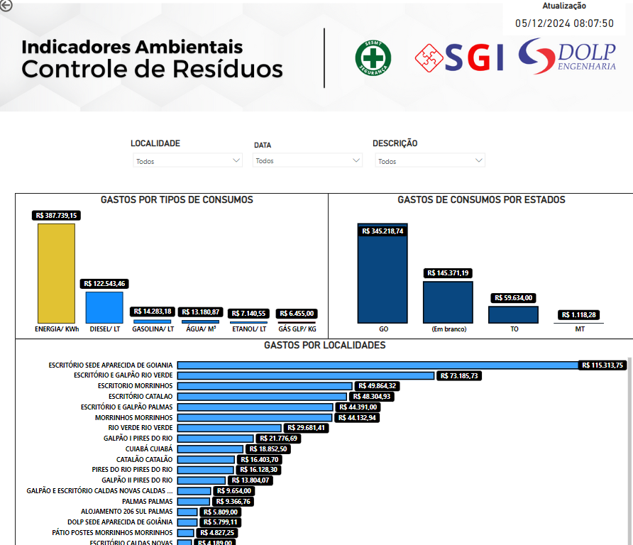
- Validade de Documentação

-
-
Validade de Documento

-
Descrição : Aplicação para validação de documentos da empresa.

Aplicação se abre em formato de relátorio com os documentos da empresa.

-
Passo a Passo :
-
Ao clicar no botão "NOVO" abre uma nova janela para registro

- Ao clicar no botão "+ Tipo Documento" Abre uma janela para o registro de um novo tipo de documento.
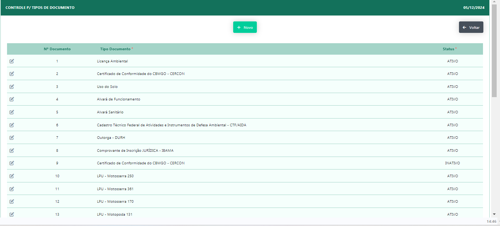
-
Ao clicar no botão "NOVO" abre uma nova linha para registro de um novo documento.
-
Ao clicar no "Icone" de edição abre uma janela para edição do documento.

-
Insira os anexos se necessário
-
Edite o documento e clique em salvar.
-
Ao clicar no botão no botão "Pesquisa" abre um novo filtro.

- Ao clicar no Ãcone "PDF" para abrir e realizar o download do documento ao clicar no link do mesmo.

Auditoria Interna 
Sub-menu para a pré-auditoria da empresa.
-
Pré-Auditoria

-
Descrição : Aplicação para pré-auditoria da empresa.Gestão e preparação de documentos pré auditoria.

-
Passo a Passo :
- Ao clicar no botão "NOVO" abre uma nova janela para registro de um novo.
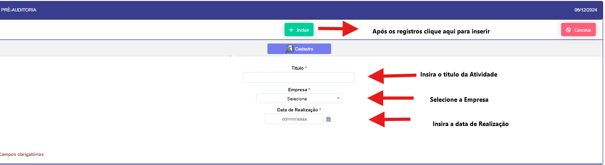
- Ao clicar no botão "PESQUISA" abre um novo filtro para pesquisa de documentos.

- Ao clicar no icone de edição abre uma janela para edição do documento.
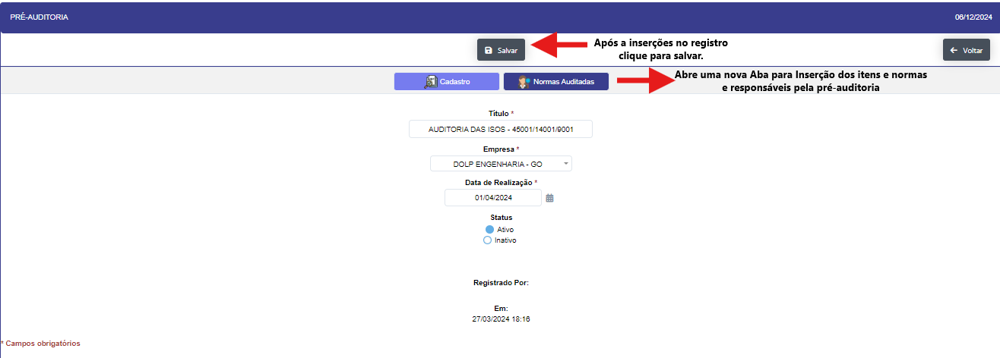
- Abre um segunda Aba para inclusão dos itens e normas ao serem editados ao clicar no botão


- Ao Clicar no botão "Inserir Item"
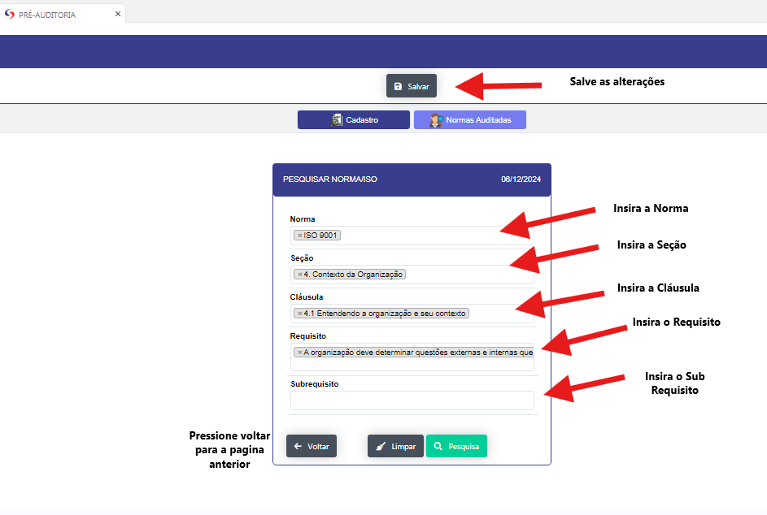
- Ao clicar no icone de edição abre uma janela para edição do documento.
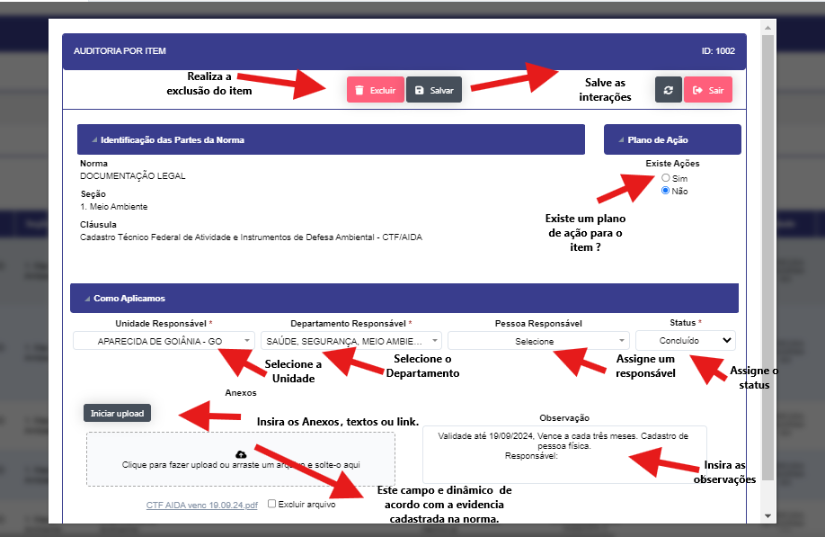
- Ao clicar em "Salvar ou Sair " volta a pagina inicial da pré-auditoria
- Ao clicar > Abre o detalhe do titulo da pré-auditoria.

-
Cadastrar Norma/Iso

-
Descrição: Realiza o cadastro das normas e isos da empresa. Aplicação abre em filtro para pesquisa de normas e isos.
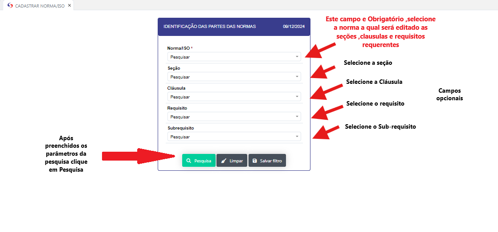
-
Passo a Passo :
-
Ao preencher os paramentros da pesquisa se abrirá a tela de cadastro da norma ou iso.

- Ao clicar no botão novo, podera realizar o cadastro de uma seção ou parte da norma/iso a ser auditada.

- Ao clicar no icone de edição , podera realizar as alterações necessárias na seção ou parte da norma/iso

- Se possuir evidencia ao salvar a seção ou parte da norma/iso, se abrirá um modal para o cadastro da mesma

- Apos incluir o registro da Evidencia , precione o botão voltar e retorne a parte anterior.
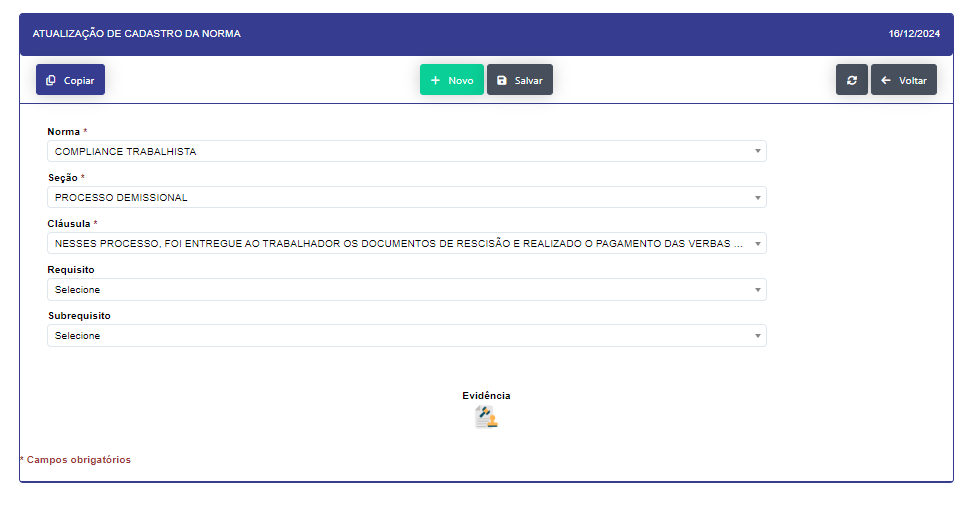
-
Assim aparecerá o icone de evidencia ao clicar sobre o mesmo poderá visualizar ou editar a evidencia.
-
Cadastros Auxiliares
-
Descrição: Realiza o cadastro dos cadastros auxiliares referente a pré auditoria
-
Norma/Iso

-
Descrição: Realiza o cadastro das normas e isos da empresa.
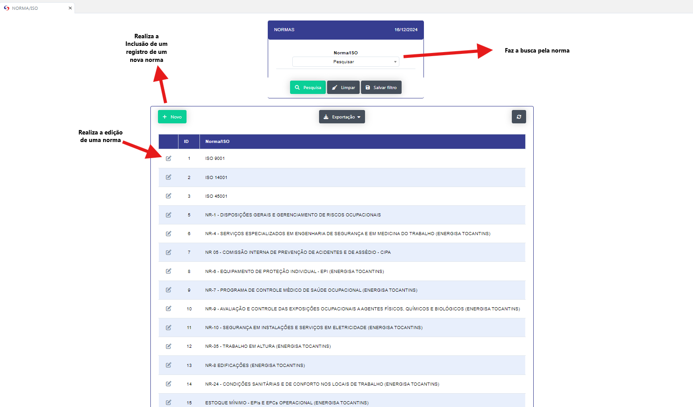
-
Passo a Passo :
-
Ao clicar no botão novo se abrirá um modal para um cadastro de um nova norma ou iso.

- Ao clicar no icone de edição , podera realizar as alterações necessárias na norma ou iso.
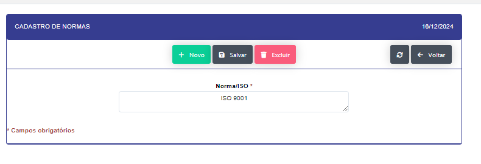
-
CapÃtulo/Seção

-
Descrição: Realiza o cadastro dos capÃtulos e seções.

-
Passo a Passo :
-
Ao clicar no botão novo se abrirá um modal para um cadastro de um nova capitulo ou seção.
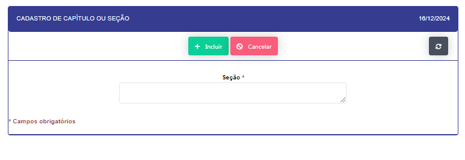
- Ao clicar no icone de edição , podera realizar as alterações necessárias no capitulo ou seção.
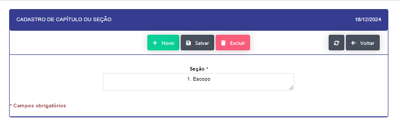
-
Clásula

-
Descrição : Realiza o cadastro das clausulas
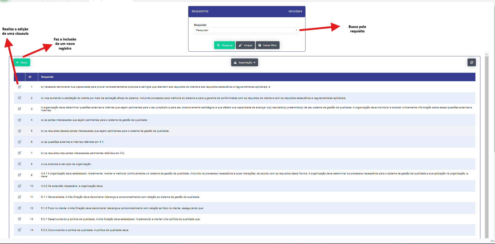
-
Passo a Passo :
-
Ao clicar no botão novo se abrirá um modal para um cadastro de um nova clausula.
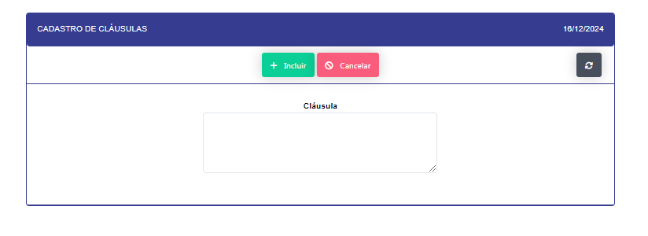
- Ao clicar no icone de edição se abrirá um modal para edição de um clausula.

-
Requisito 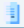
-
Descrição : Reliaza o cadastro dos requisitos
-
Passo a Passo :
-
Ao clicar no botão novo se abrirá um modal para um cadastro de um novo requisito.

- Ao clicar no icone de edição se abrirá um modal para a edição do requisito.

-
Subrequisito
-
Descrição : Realiza o cadastro dos sub-requisitos.
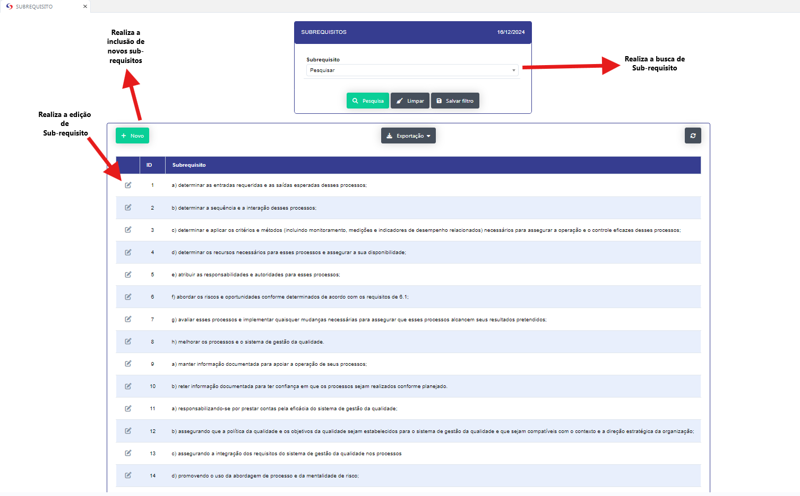
-
Passo a Passo :
-
Ao clicar no botão novo se abrirá um modal para um cadastro de um novo sub-requisito.
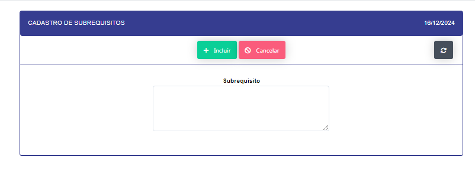
- Ao clicar no icone de edição se abrirá um modal para a edição do sub-requisito.
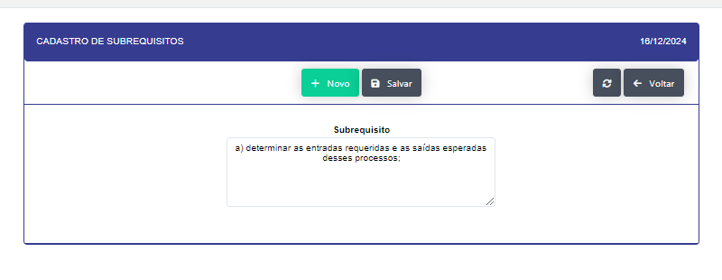
-
-
Solicitação de Processos
-
Descrição :
Esta sessão esta destinada as aplicações de novos processos, procedimentos e fluxos de trabalho. A mesma abre um sub menu referente as etapas da criação a validação de novos processos. - Solicitação (Aqui se faz a solicitação de um novo processo) - Compliance (Validação do Departamento de Compliance) - SGI (Validação do Departamento de Gestão Integrada) - Diretoria (Validação da Diretoria) - Relatorio (Retorna o status de cada Solicitação) - Historico (Exibe o historico de cada Solicitação)
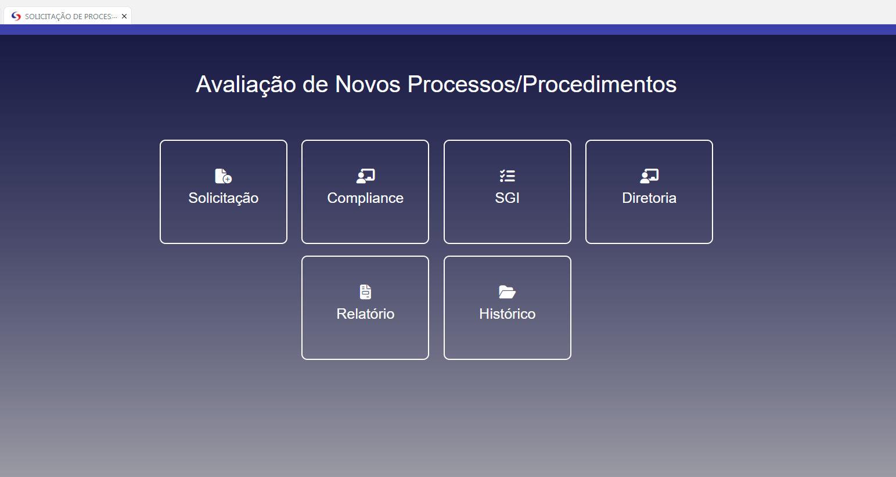
-
Passo a Passo :
-
Ao clicar no menu Solicitação, abre uma tela com os campos necessários para a solicitação de um novo processo.

- Ao clicar no botão incluir abre uma tela para o preeenchimento de uma nova solicitação

- Ao clicar no botão incluir abre uma tela para o preeenchimento de uma nova solicitação
- Após a solicitação ser criada, ela é enviada para a validação do Departamento de Compliance.
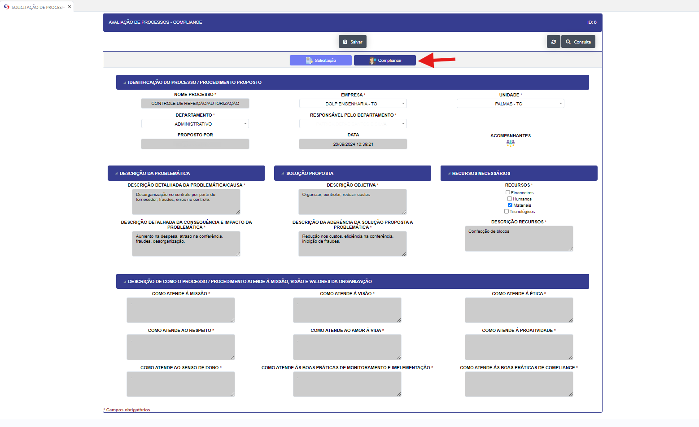
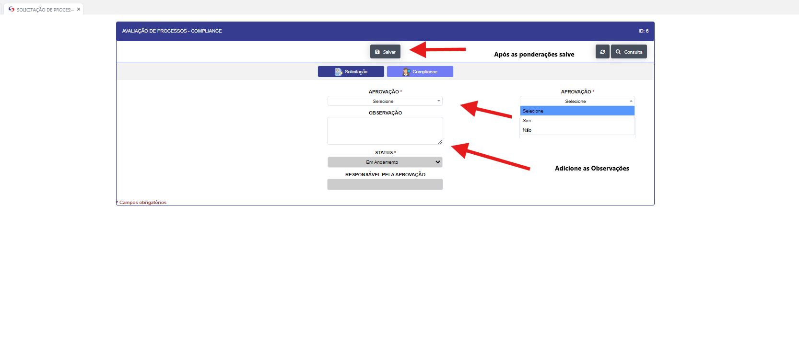
- Após a validação do Departamento de Compliance será enviada para o Departamento de Gestão Integrada.
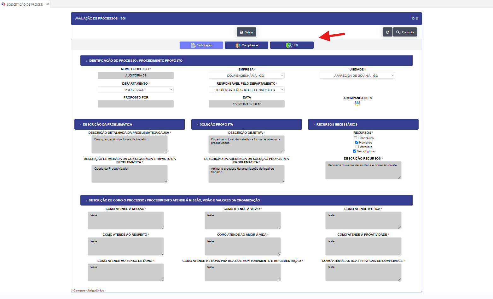
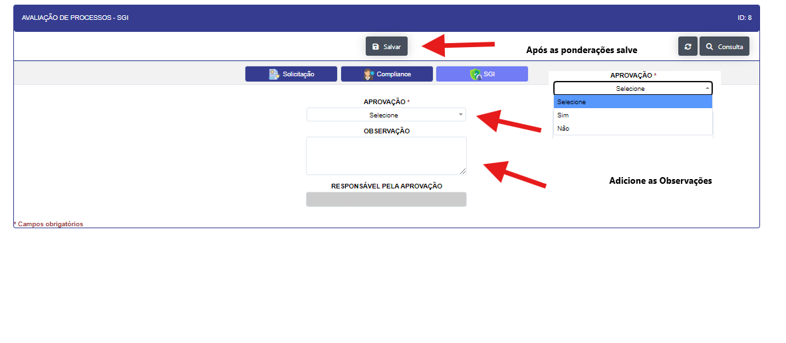
- Após a validação do Departamento de Gestão Integrada será enviada para a Diretoria.


- Após todas as validações, o processo é criado e é possÃvel visualizar o relatorios das solicitação
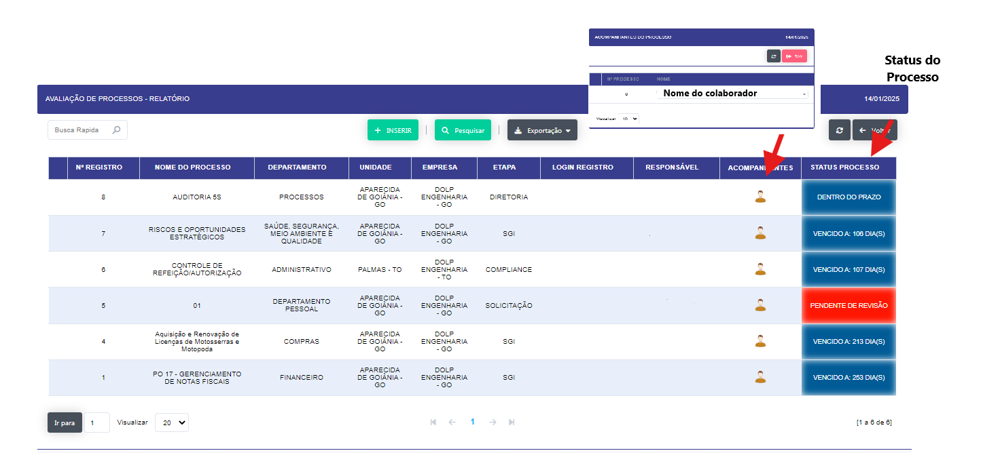
- Além disso, é possÃvel visualizar o historico de cada solicitação.

- Modelo do PDF do processo finalizado.
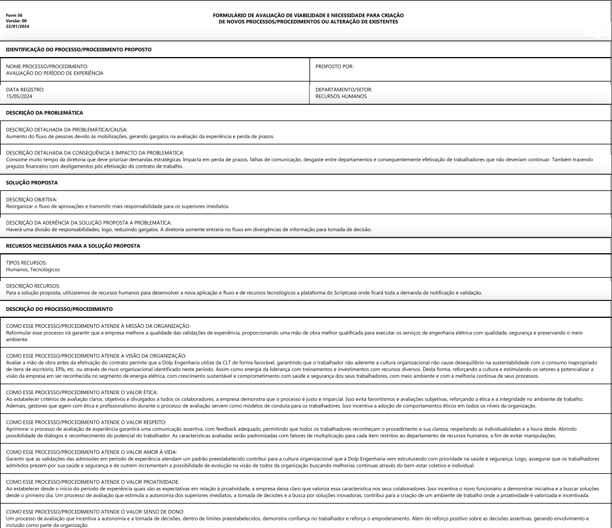 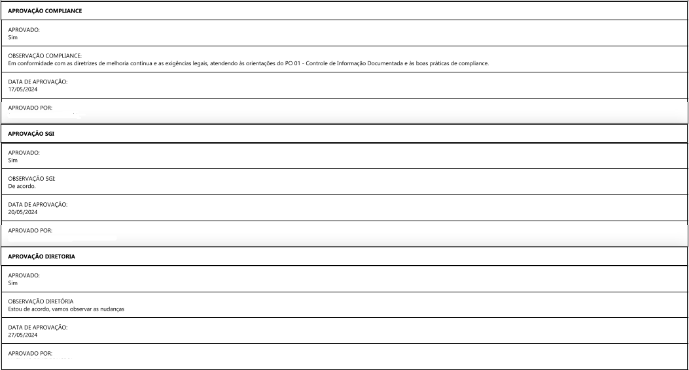
-
Matriz de risco
Aplicação destinada a orientar os departamentos junto com o time de complice em relação a identificação de riscos e a implementação de medidas de mitigação e tratamentos dos mesmos.
-
Analise de Riscos
-
Descrição : Aplicação destinada a orientar os departamentos junto com o time de complice ,onde se registra os riscos identificados e suas respectivas medidas de mitigação e tratamentos, e realiza os calculos dos riscos atraves dos riscos ou oportunidades (anteriormente chamados de NC). Os mesmo são cadastradps no menu da Monitoria.
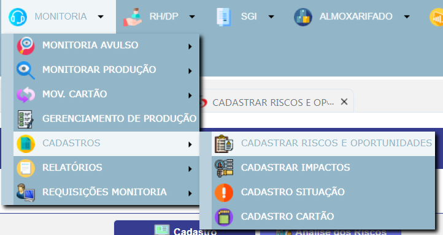
A tela inicia da Matriz de analise de riscos

-
Passo a Passo :
-
Ao clicar no botão " + NOVO", se abre um formulário para cadastrar um titulo.
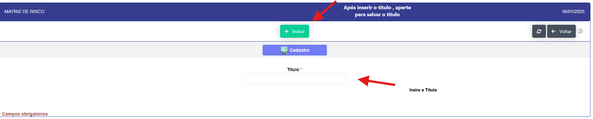
- Após incluir o titulo se abre uma nova aba no formulário para incluir os riscos já cadastrados.
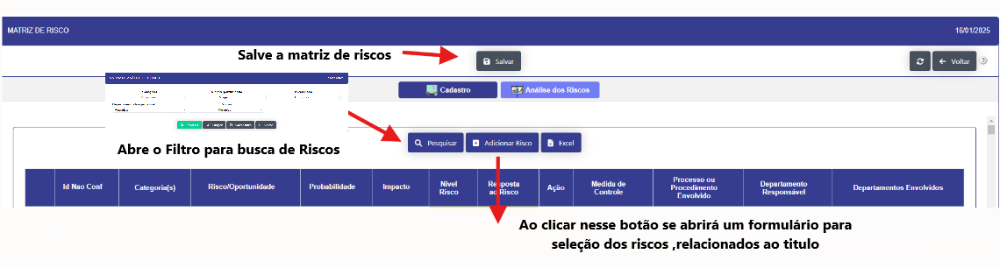

- Após a inserção dos requisitos os mesmo serão retornados na tela para que possa ser realizados os calculos de riscos.
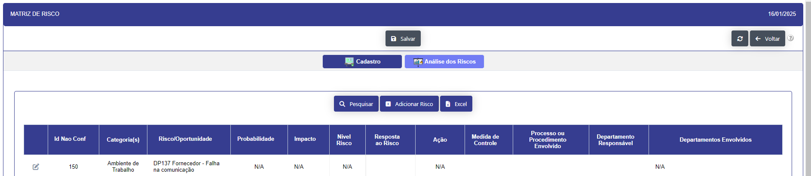
Ao clicar no icone de edição , abre um modal para realizar os calculos de riscos.

Após salvar o calculos de riscos, o mesmo é retornado na tela com os resultados.
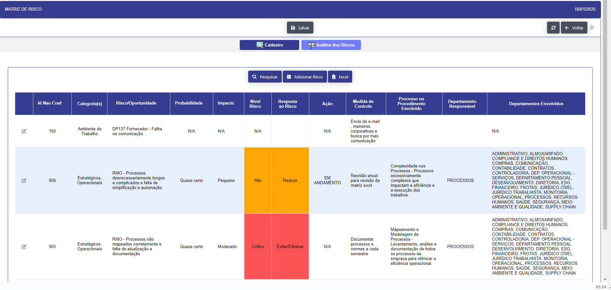
-
Categorias
Formulario para cadastrar categorias de riscos e oportunidades.

- Ao clicar no botão novo se abre um modal para cadastro de uma nova categoria.
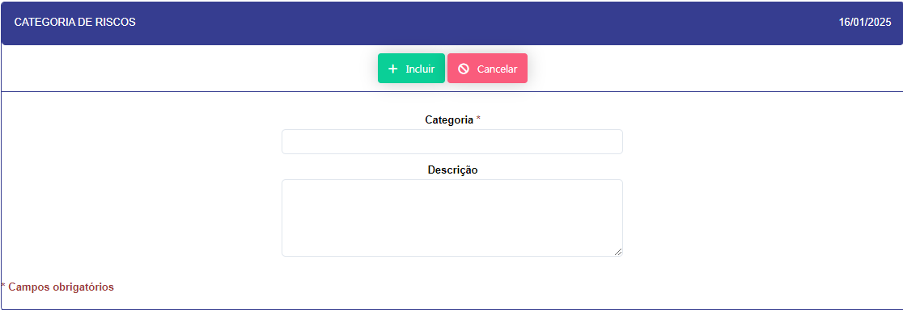
-
Ao clicar no botão salvar, a categoria é cadastrada e retornado na tela.
-
Ao clica no botão Pesquisar abre um modal com o filtro para pesquisar categorias.

- Ao clicar no icone de edição abre um modal para editar a categoria.
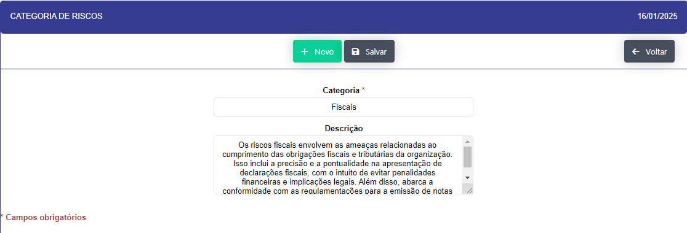
-
-
Ata de Reunião 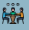
Esta sessão esta destinada a realizar a ata de reunião, onde é possÃvel cadastrar e gerenciar as atas de reunião. A mesma esta dividida em 3 sessões:
- Reuniões
- Titulos
-
Relatorio => Assinaturas pendentes.
-
Reuniões
Aplicação se abre no formato de formulario , já para inclusão de uma nova ata de reunião.
- Selecione o titulo da reunião.
- Insira a data da reunião.
- Selecione o local da reunião.
- Após a inclusão dos dados , precione o botão incluir para salvar a ata de reunião e se abrira um tela para o preenchimento dos registros da reunião.

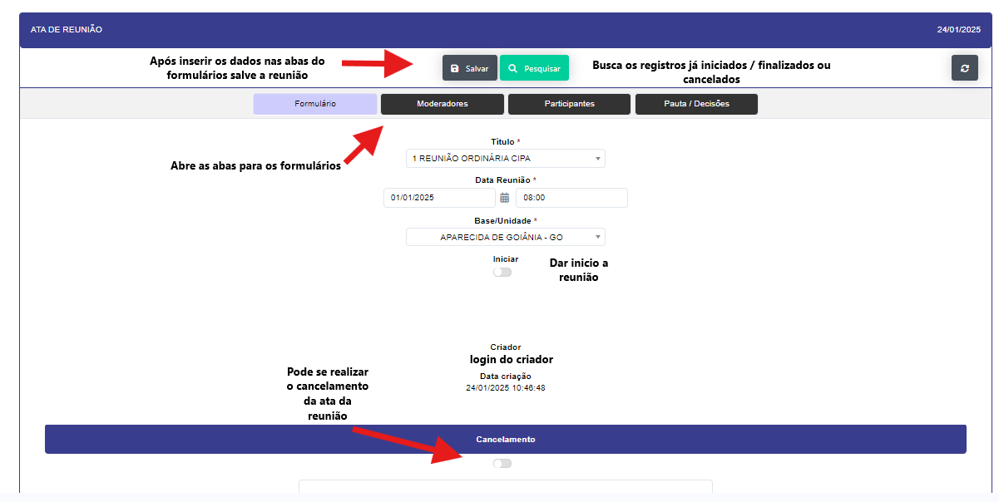
Moderadores
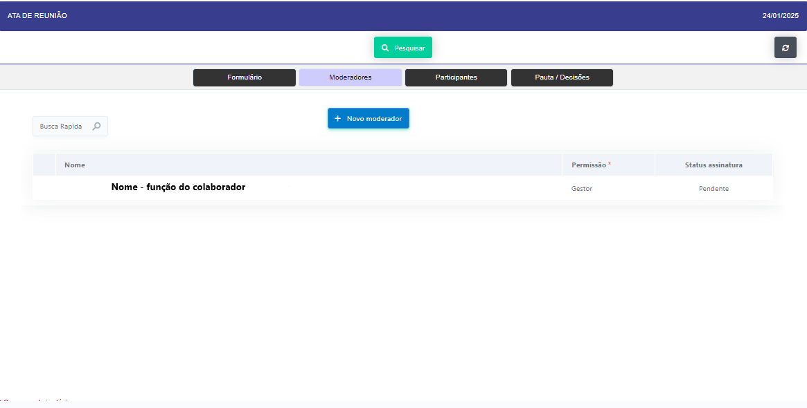
O criador do reunião já e o moderador por padrão. Podendo ser adicionado mais moderadores. ao clicar no botão de novo moderador libera o campo para registro. Ao clicar no botão salvar, o moderador é adicionado.
Participantes
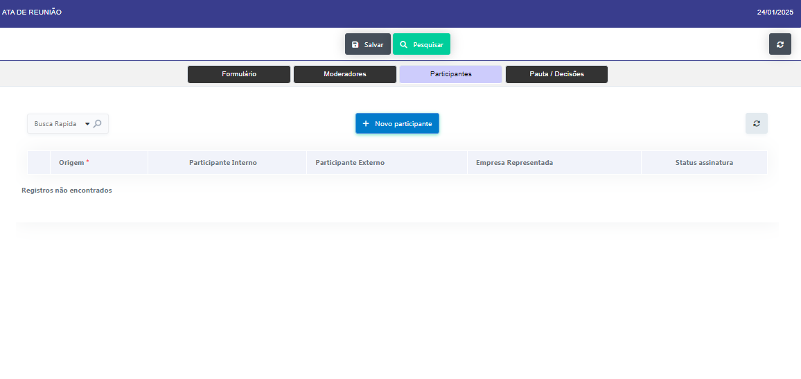
Ao clicar no botão de novo participante libera um novo campo para inclusão de um novo participante.
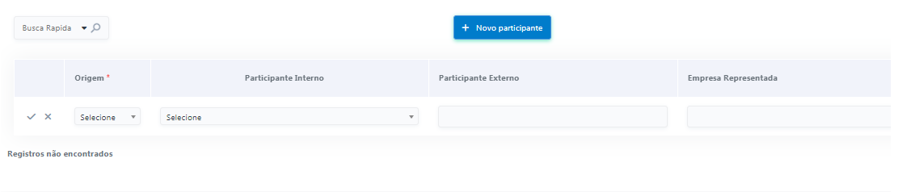
Pauta/Decisões

Ao clicar no botão de nova pauta , abre um modal para inclusão de uma nova pauta.

- Preencha os dados da ata de reunião e ao finalizar, clique no botão salvar os dados no decorrer da reunião para salvar a ata de reunião e preciso informar ao sistema que a ata de reunião foi concluida. e informa a data e hora fim e se existe ação para criação de um plano de ação.
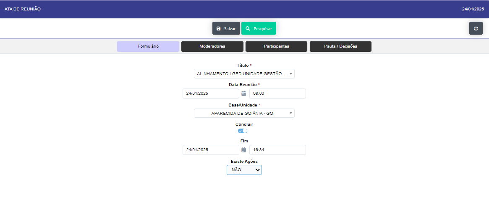
Agora sim clique no botão salvar no cabeçalho do formulario para salvar a ata de reunião.
Após salva todas as assinaturas aparecerão para os reponsaveis e participantes para assinar a ata de reunião.
Ao clicar no botão de pesquisar , abre uma tela para visualizar as atas de reunião.
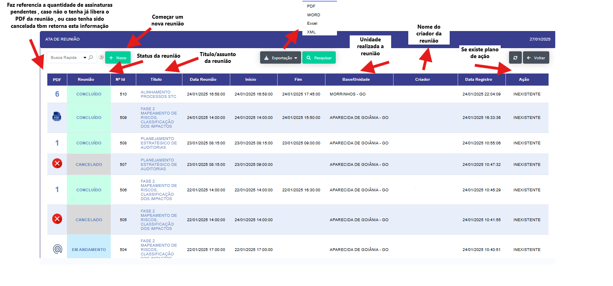
-
Titulos
-
Aplicação para cadastro de novos titulos/ Assuntos para a reuniões.
- Ao clicar no botão de novo titulo abre um modal para inclusão de um novo titulo.

-
Relatorio

-
Aplicação para visualizar as atas de reunião, que estão com as assinaturas pendentes.

- Ao clicar no botão pesquisar se abre um modal para poder filtra os paramentros da lista que está com as assinaturas pendentes
-
-
Lista de Presença

Esta sessão esta destinada as aplicação para registro e controle de lista de presença, em treinamentos , DDS, Certificações, palestras, eventos corporativos e afins.
-
IMPORTANTE: Está aplicação e gerenciada por niveis de acesso sendo eles
-
CADASTRO (Tem permissão de realizar o registro das lista de presença de qualquer tipo)
-
TITULO (Tem a permissão de criar os titulos para as listas de presença)
-
EFICÃCIA(Tem a permissão para avaliar a eficacia)
-
RELATÓRIOS (Tem acesso aos relatorios dos registros)
-
PRESENÇA (Acesso padrão a todos os usuarios do sistema para que possam assinar as listas de presença, podendo ser assinatura digital ou via biometrica)
-
Registrar
-
Inclusão - Tela Padrão de abertura

-
Descrição: Cria uma novo registro para ser assinado podendo ser treinamentos, DDS, Certificados, palestras, Tratativas de não conformidades e registros de eventos.
-
Passo a Passo:
-
No campo TIPO selecione a opção de registro :
- Certificação
- DDS
- DDS ENERGISAs
- DDS EQUATORIAL
- DDS Equatorial Administrativo
- DDS Equatorial Operacional
- DDS PRÃTICO
- OUTRO
- PALESTRA
- SIPTMA
- TREINAMENTO
- No campo ORIGEM selecione a opção
- INTERNO (Se o instrutor , palestrante for um colaborador DOLP)
- EXTERNO (Se o instrutor , palestrante for uma pessoa externa)
- No campo AÇÃO EXISTENTE selecione a opção caso a lista de presença seja fruto de um plano de ação
- SIM
- NÃO
- No campo NºPLANO DE AÇÂO selecione o registro do numero do plano de ação caso este registro possua uma ação existente. (Na pratica esta realionada com a reposta acima caso a mesma seja positiva deverá selecionar na lista o numero do plano de ação a qual esta relacionado, caso negativa deixar em branco)
- No campo TRATATIVA NC EXISTENTE selecione a opção caso a lista de presença seja parte da tratativa de uma Não conformidade
- SIM
- NÃO
- No campo ID TRATATIVA selecione o registro do ID da tratativa relacionado a lista de presença. (Na pratica esta relacionada com a reposta acima caso a mesma seja positiva deverá selecionar na lista o id da tratativa da NC a qual esta relacionado,caso negativa deixar em branco).
- No campo ID NC selecione o registro do ID da Não conformidade referente ao id da tratativa da não conformidade caso a resposta acima seja positiva,caso negativa deixar em branco.
- No campo UNIDADE selecione a unidade a qual está sendo realizado o registro.
-
Após clicar no botão " + INCLUIR" se abrirá mas 3 abas sendo elas :
-
INSTRUTOR - Vs- CONTEUDO:

- Ao clicar no botão "INCLUIR" se abrira uma tela para inclusão do conteudo da atividade

- PARTICIPANTES :
- Se abrirá um tela onde será inseridos os participantes da lista de presença
- Tendo duas opções :
- a inserção manual no botão


-
a automatizada de todos os colaboraboradores da unidade atraves do botão

-
ANEXO :
Nesta aba se abrirá a opção para inserções de inserções dos arquivos.

-
Edição - Botão localizar registros

Se abre uma consulta onde se tem acesso aos registros já criador com suas informação principais e status onde em cada registro se tem acesso ao formulario para ediçao e tratativas adicionais e tambem a opção de coletar as assinatuturas biometricas da lista

- Ao clicar no botão de edição se abrir o formulário do registro com as 4 abas abertas.

-
Descrição: Realiza a edição e acompanhamento dos registros para inclusão de anexos e solicitação de assinaturas por via biometrica.
-
Passo a Passo:
-
No Botão " Coletar Biometrias da lista" se abre uma aplicação onde se poderá coletar a assinatura de todos os participantes da lista"
 se abrirá uma aplicação para que se possa realizar as coletas das biometrias.
se abrirá uma aplicação para que se possa realizar as coletas das biometrias.

-
-
Cronograma de Treinamentos

Está seção abre o cronograma de treinamentos, a tela inicial se abre em forma consulta mostrandos as informações dos registros

-
Descrição:
-
Cria um planejamento dos treinamentos a serem realizados.
-
Passo a passo :
- Ao clicar no botão "NOVO" se abrirá um tela de cadastro de treinamento.
- Data Inicial prevista
- Data de Validade
- Base
- Responsavel Treinamento
- Público Alvo
- Tipos
- Titulo

-
-
Titulo

Sub-menu onde se da acesso a criação, edição e analise dos titulos criados para as atividades propostas as listas de presença
-
Cadastro

Esta aplicação onde são registrados os titulos das atividade e sua duração, ela abre um relatorio com os titulos já existentes.

-
Descrição: Aplicação para criação dos titulos das atividades, onde cada titulo atribui a uma tipo de registro.
-
Passo a Passo : Ao clicar no botão "NOVO" abrirá uma tela para criação de um novo titulo.

-
No campo "TIPO" deverá ser informado o tipo do registro vinculado ao titulo
- No campo "GERA CERTIFICADO" deverá ser informado se a atividade gerá um certificado.
- No campo ao Centro "SISTEMA DE GESTÃO" deverá ser informado o departamento responsavel pela atividade
- No campo "Horas : Min" Deverá ser infomado a duração da atividade, onde após a inclusão sera convertido no campo "Duração em Minutos"
-
No campo "TITULO" - deverá ser informado o titulo da atividade.
-
Relatório

-
Descrição: Relatorio que trás os titulos criados para cada tipo de atividade, Aplicação se abre em formato de filtro onde deve-se passa os parametros para abertura do relatorio do item a ser buscado.
- Passo a passo:
- No campo "Tipo" Selecione o tipo de atividade, ao qual se quer consultar os titulos criados Este campo es obrigatorio para a consulta os demais campos são para otimização da mesma sendo eles
- ID (numero do titulo)
- SIGE (Sistema de Gestão - Departamento Responsavél)
-
TITULO Será retornada uma lista apartir do tipo de Atividade selecionada no campo "TIPO"

-
Após colocar os paramentros desejados ao clicar no botão "Pesquisa" , Se abriará o relatorio com o resultado.

-
-
Relatório

Sub menu de relatorios personalizados
-
Por Registro

-
Descrição : Aplicação faz busca pelos id dos registro das atividades, Aplicação abre em formato de filtro que após a passagem de paramentros abre o relatorio. Relatorio focado nas principais informações da lista de presença se seu status, Podendo ser Aguardando(Ainda falta assinaturas e analise de eficacia), Cancelado(quando atividade proposta e cancelada),Eficaz(quando a atividade proposta teve suas assinaturas compostas e sua avaliação foi ineficaz) e Ineficaz(Quando a atividade fim não conseguiu chegar em seus objetivos)

-
Passo a passo :
- Selecione os campos que serão passados como parametros sendo eles :
- Nº de Registro (Id da lista de presença)
- Tipo : Selecione o tipo de atividade exemplo : DDS, Treinamento , Certificação.
- Requerente : Seleciona o instrutor
- Campos de datas: realiza um busca completa pelos paramentro das datas selecionadas.
- Base : Unidade em qual foi realizada
- SIGE : Sistema de Gestão - Departamento responsavel
-
Titulo : Realiza a busca pelos titulos das Atividades.

-
Por Instrutor

-
Descrição: Aplicação faz busca pelos instrutores, mostrando as atividades realizadas pelo mesmo. Aplicação abre em forma de filtro para que possa ser passados os paramentros para seu relatorio.

-
Passo a passo :
-
Selecione os campos que serão passados como parametros sendo eles :
- Nº de Registro (Id da lista de presença)
- SIGE : Sistema de Gestão - Departamento responsavel.
- Unidade : Unidade em qual foi realizada
- Titulo : Realiza a busca pelos titulos das Atividades.
- Filtro de Datas
- Status da Atividade
- Tipo : Selecione o tipo de atividade exemplo : DDS, Treinamento , Certificação.
- Origem : Selecione se a atividade foi realizada por um instrutor INTERNO OU EXTERNO

Apos a Abertura do relatorio e possivel acessar o registro em pdf de cada lista de presença atraves do Icone de PDF mostrado acima. Ao clicar se abrirá o Relatorio Abaixo.

-
Por Participante

-
Descrição : Aplicação faz busca pelos participantes , mostrando as atividades realizadas pelo mesmo. Aplicação abre em forma de filtro para que possa ser passados os paramentros para seu relatorio, retornando quais atividade para cada colaborador participou.

- Passo a Passo
- Selecione os campos que serão passados como parametros sendo eles :
- Nº de Registro (Id da lista de presença)
- Tipo : Selecione o tipo de atividade exemplo : DDS, Treinamento , Certificação.
- Titulo : Realiza a busca pelos titulos das Atividades.
- INSTRUTOR : Selecione o registro do Instrutor
- Filtro de Datas
- Presente : Se o usuário estava presente sim ou não
- Status da Atividade
- Unidade : Selecione a Unidade a qual a atividade foi realizada
- PARTICIPANTES : Realiza a busca pelos participantes das atividades Após setados os paramentros abrirá o relatorio conforme selecionado.

-
Feedback por Treinamento

Aplicação abre o relatorio do Feedback das atividades, tela se abre em forma de relatório mostrando as informação sobre a avaliação de cada treinamento

-
Passo a Passo
-
Ao abrir o botão no icone de Avaliações se abrirá um modal retornando a avaliação de cada pergunta

- Ao Abrir o botão
 ,se abrirá os seguintes campos onde se poderá passar os paramentros para a consulta.
,se abrirá os seguintes campos onde se poderá passar os paramentros para a consulta. - ID Treinamento
- Instrutor
- Titulo
- Unidade

-
Veja como é realizada as assinaturas da lista de presença no sistema SGDAcesse o MENU SGD e selecione a opção ASSINATURAS GERAIS
-
-
-
Certificação
Sub-menu aplicado a certificações dos colaboradores tanto interno quanto externo.
- Acompanhamento
- Meus Certificados
- Certificado por Participante
- Conteudo por certificação
-
Relatorio
-
Acompanhamento
Aplicação que realiza a validade das certificações dos participantes , onde é possÃvel verificar a validade das certificações e realizar a renovação das mesmas.
Ao clicar no botão + Certificação Extrena , é possÃvel adicionar uma nova certificação externa para o participante pois se abre um modal para cadastro.
-
Meus Certificados

Aplicação que retorna os certificados de cada colaborador
-
Certificado por Participante

Aplicação para Emissão e consulta de certificado por participante
Descrição: Aplicação abre em forma de filtro com seguintes campos :
-
Nº form50 (ID do treinamento)
-
Base/Unidade (Base/Unidade do treinamento)
-
Participante (Nome do participante)
-
Titulo (TÃtulo do certificado)
-
Status Colaborador (Status do colaborador) Ativo / Inativo
-
Assinado (Assinado pelo colaborador/ Treinamento)
-
Existe Certificado (Existe certificado para o participante)
Observação :
- Caso não exista o certificado , se abrirá um formulario onde e possivel incluir o certificado do participante.

- Caso o participante já tenha o certificado , se abirá uma grid de certificados do participante, verificando se o mesmo já foi assinado ou não

-
Conteudo por Ceritificação
Aplicação que verifica se os titulos dos treinamentos são adequados para a certificação

-
Relatório
Aplicação que retorna um relatório de certificados emitidos